CVE-2021-44228: Setting Up Virtual Machines for the Attacker and Victim
In this blog post, we will share the steps that you can follow to set up the attacker and victim’s virtual machines in VirtualBox (Version 6.1.30) that you can use to simulate the use of CVE-2021-44228 to exploit Log4j vulnerabilities. We will follow the steps provided within the log4jshell-lab GitHub repository by Roberto Rodriguez
Pre-Requisites
For the purpose of this blog, we will use three virtual machines: Ubuntu Server (Tomcat) and Ubuntu Desktop (Attacker and Remote-SSH). If you need to create these virtual machines using VirtualBox, you can follow the steps from these previous blog posts:
-
VirtualBox: Creating an Ubuntu Desktop 20.04.3 LTS Virtual Machine
-
VirtualBox: Creating an Ubuntu Server 20.04.3 LTS Virtual Machine
Setting Up the Attacker Virtual Machine
Installing Required Commands
Open the terminal application and run the following command:
sudo apt update
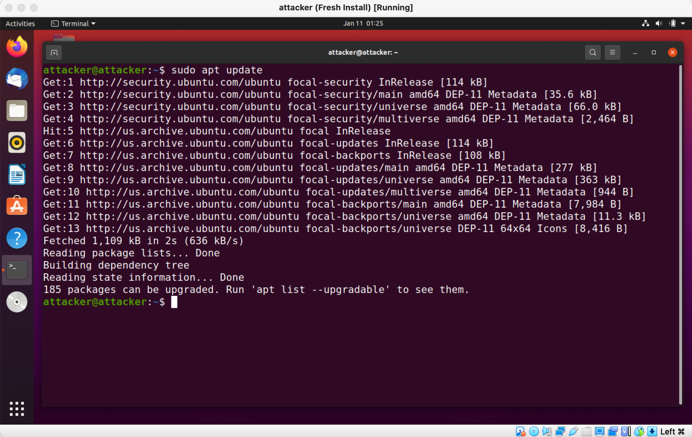
Let’s install the git and curl commands by running the following command:
sudo apt install git curl -y
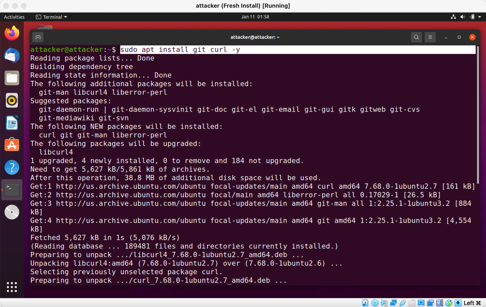
Cloning the log4jshell-lab GitHub Repository
Without changing your current directory, use the su command to use the root user. Then, use the git command to clone the GitHub repository:
sudo su
git clone https://github.com/Cyb3rWard0g/log4jshell-lab
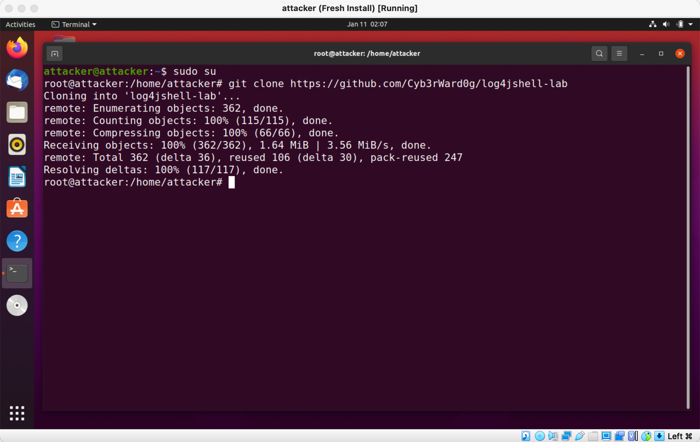
Installing Docker
Use the wget command to download the bash shell script. Then, convert the Install-Docker.sh file into an executble by using the chmod command.
wget https://raw.githubusercontent.com/OTRF/Blacksmith/master/resources/scripts/bash/Install-Docker.sh
chmod +x Install-Docker.sh
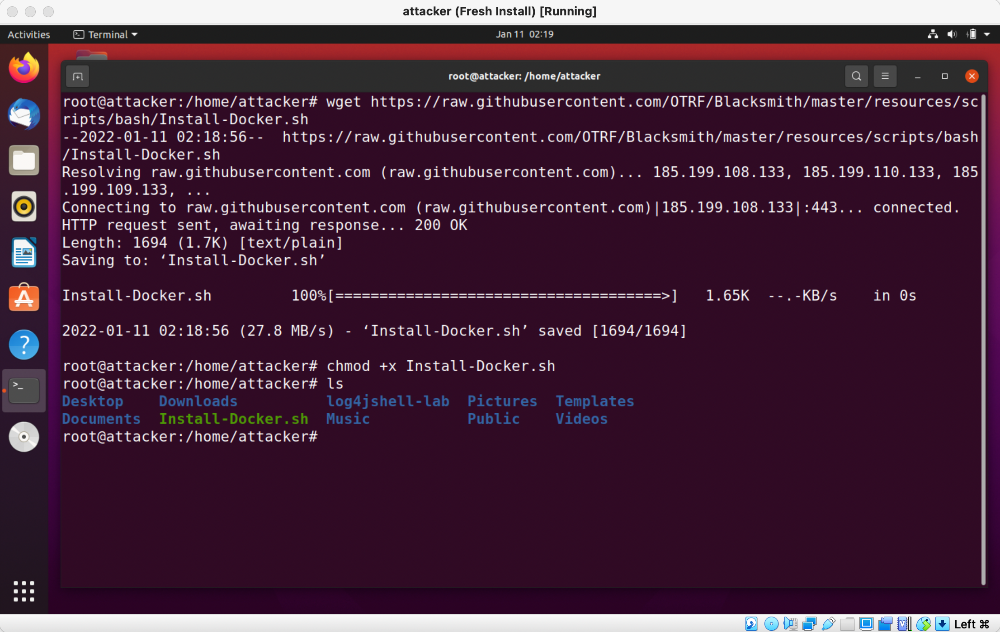
Finally, execute the Install-Docker.sh file by running the following command:
./Install-Docker.sh
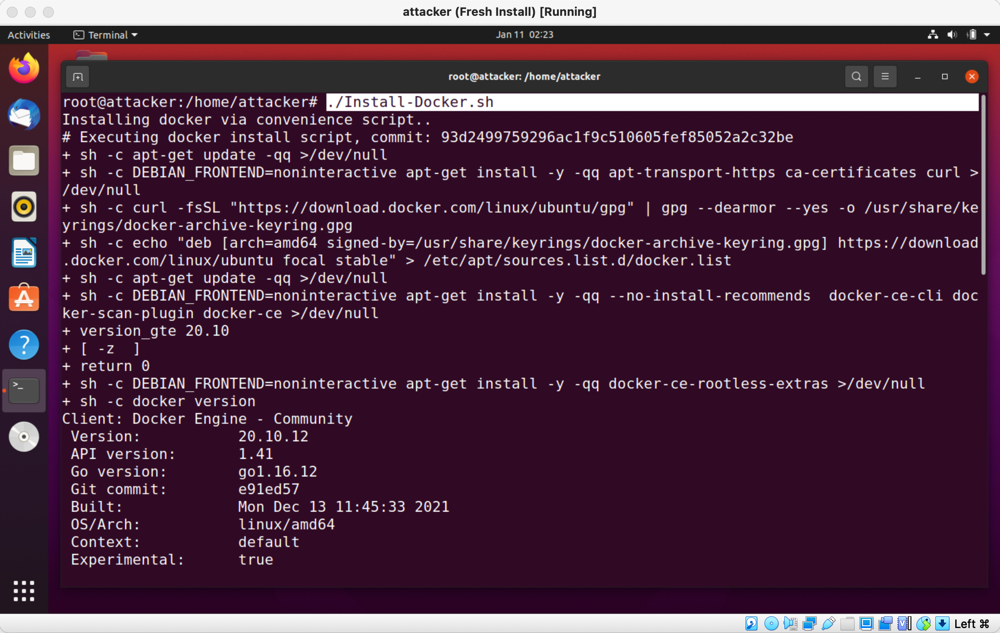
Setting Up the Victim (Tomcat) Virtual Machine
Interacting with Ubuntu Server Remotely using SSH Connection
If you followed the steps from the blog posts shared in the pre-requisites section, you should have installed the OpenSSH server when creating your Ubuntu server virtual machine. Therefore, we should be able to access our server using a SecureShell (SSH) connection.
First, let’s check the status of the SSH service and get the IP address of our server by running the following commands:
service ssh status
ip a
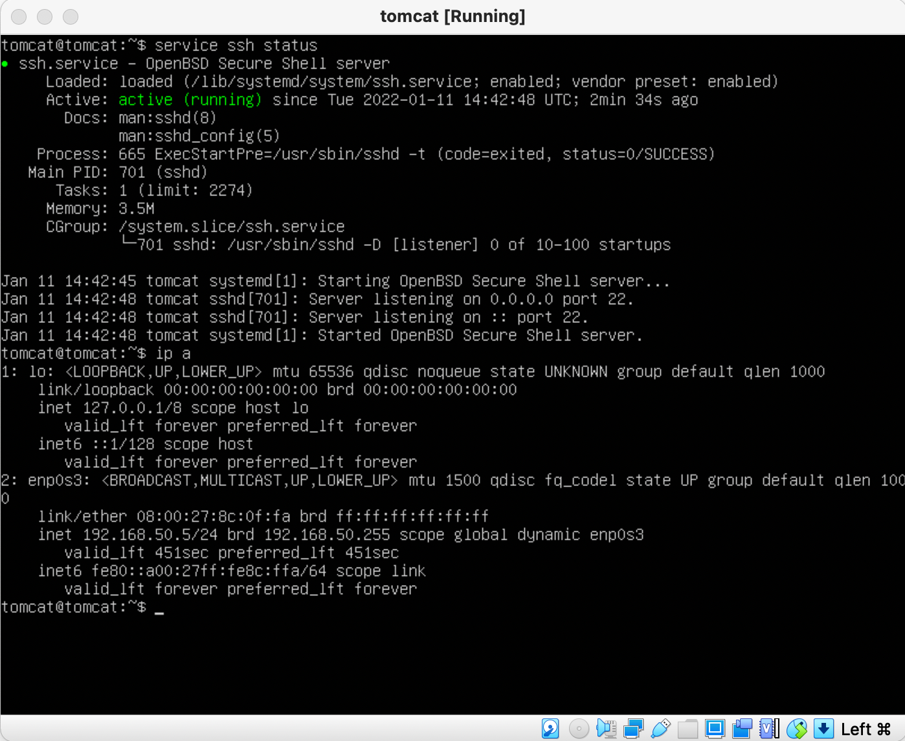
Let’s start an Ubuntu desktop virtual machine within the same network (192.168.50.0/24) and open the terminal application.
Using the user (tomcat), IP address (192.168.50.5), and password for our ubuntu server, stablish a SSH connection by running the following commands:
ssh tomcat@192.168.50.5
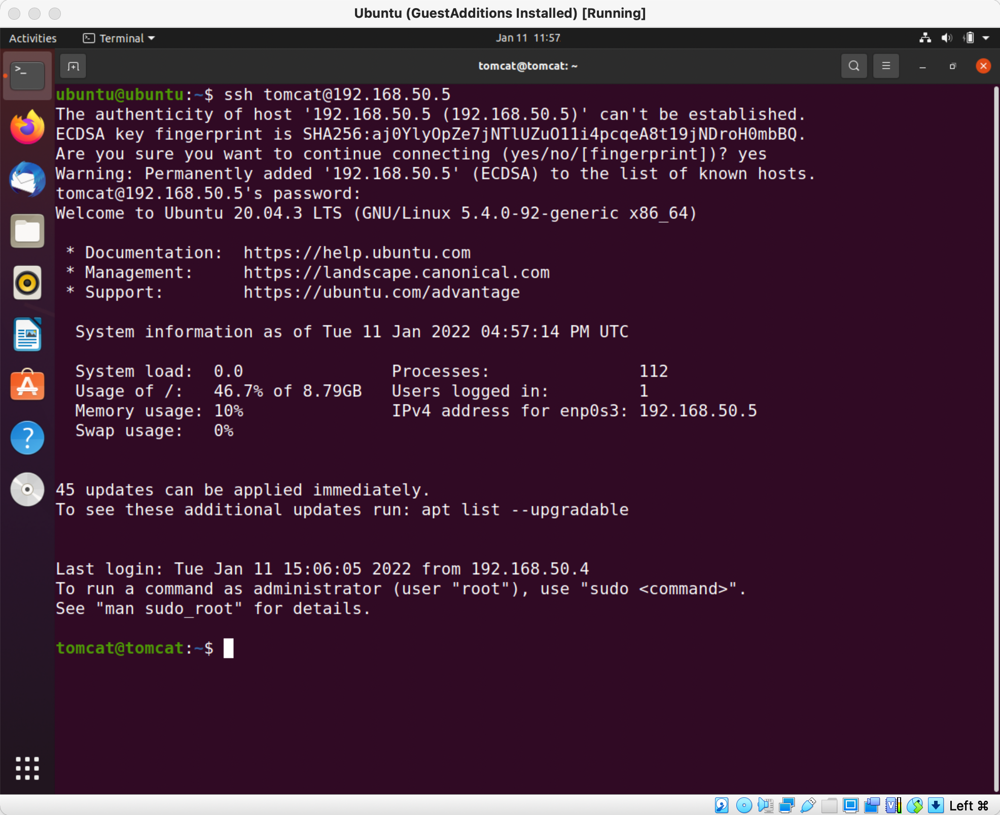
Setting Up Tomcat Server
Let’s switch our current user to the root user by using the su command.
Also, we will use the git command to clone the log4jshell GitHub repository.
sudo su
git clone https://github.com/Cyb3rWard0g/log4jshell-lab
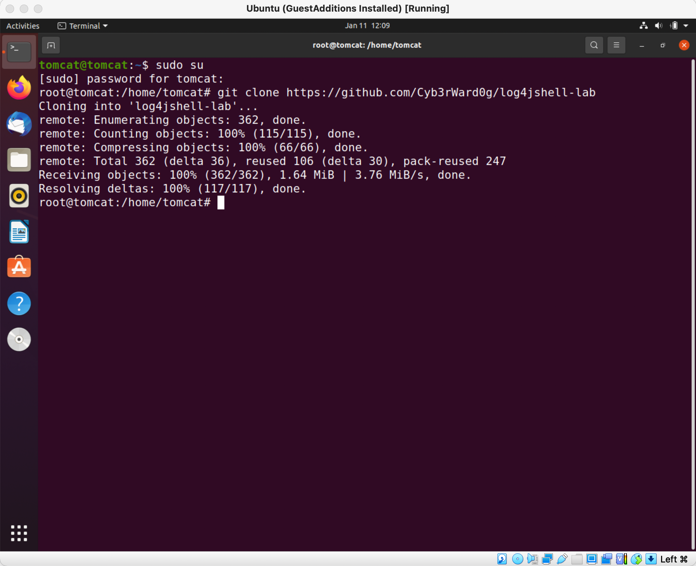
Using the cd command, change your current directory to log4jshell-lab/victim/tomcat.
Using the chmod command, make the Install-Tomcat.sh bash file an executable file.
Using the sh command, execute the Install-Tomcat.sh bash file.
cd log4jshell-lab/victim/tomcat
chmod +x Install-Tomcat.sh
sh Install-Tomcat.sh
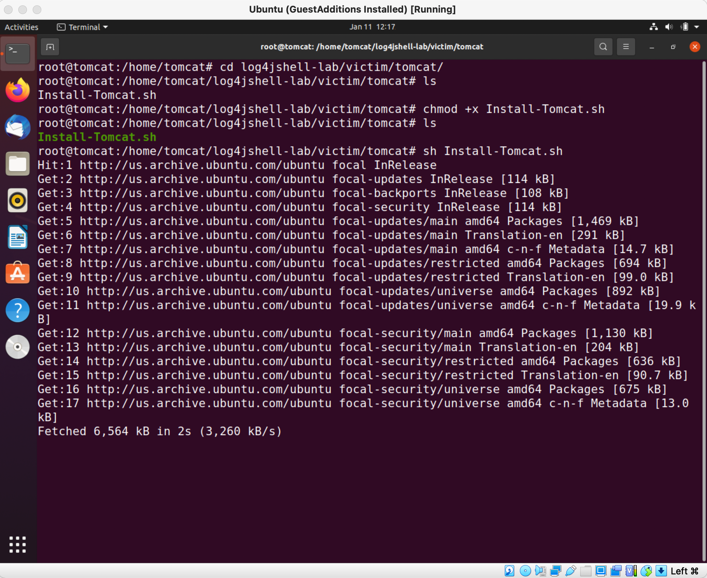
Let’s check if the Tomcat service is running properly by running the following commands:
service tomcat status
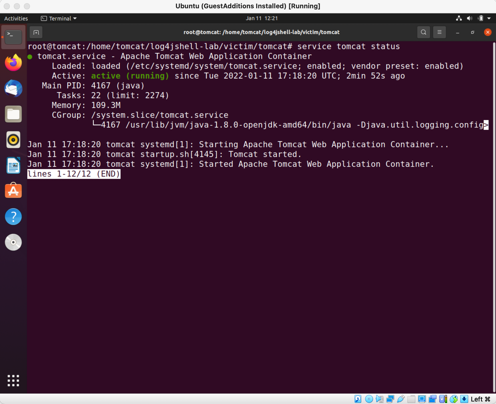
To go back to the terminal shell press CTRL + C.
Installing Docker
We will use a Docker image to compile our vulnerable applications, so let’s install Docker using a bash script from the Blacksmith OTR project.
Using the cd command, change your current directory to home/tomcat.
Using the wget command, import the Install-Docker.sh bash script.
Using the chmod command, make the Install-Docker.sh bash file an executable file.
Using the ./ command, execute the Install-Docker.sh bash file.
cd /home/tomcat/
wget https://raw.githubusercontent.com/OTRF/Blacksmith/master/resources/scripts/bash/Install-Docker.sh
chmod +x Install-Docker.sh
./Install-Docker.sh
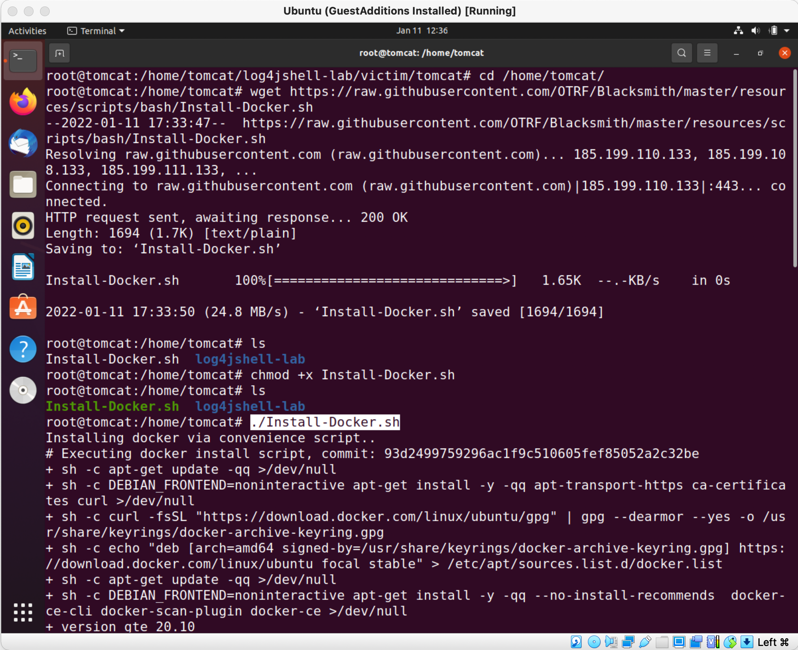
Compiling Vulnerable Java Applications
We need to add vulnerable applications to our Tomcat server. The log4jshell-lab project comes with a few vulnerable Java applications that use different versions of the Log4j library (2.14.0, 2.15.0, and 2.16.0).
We need to compile our applications and create .war files to host the vulnerable aplications in our Tomcat server under /opt/tomcat/webapps.
The bash script Compile-Apps.sh compiles applications and copies .war files to /opt/tomcat/webapps.
Using the cd command, change your current directory to log4jshell-lab/victim/vuln-apps/.
Using the chmod command, make the Compile-Apps.sh bash file an executable file.
Using the sh command, execute the Compile-Apps.sh bash file.
cd log4jshell-lab/victim/vuln-apps/
chmod +x Compile-Apps.sh
sh Compile-Apps.sh
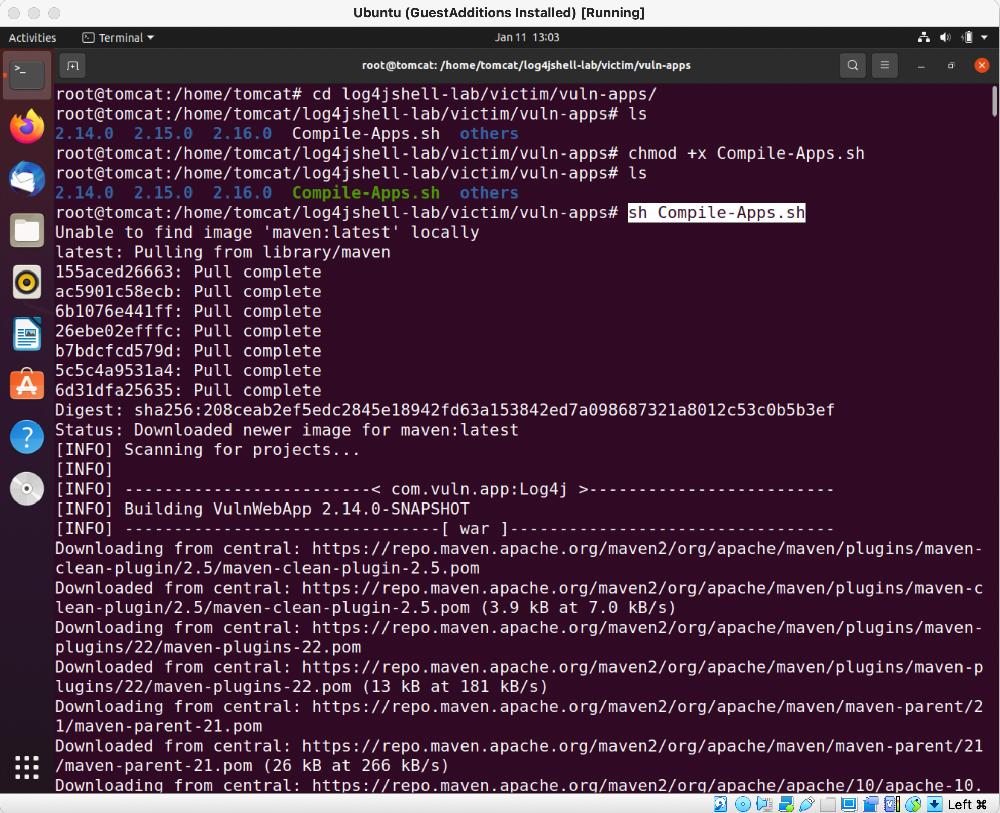
Finally, we need to stop and restart the Tomcat service by using the following commands:
service tomcat stop
service tomcat start
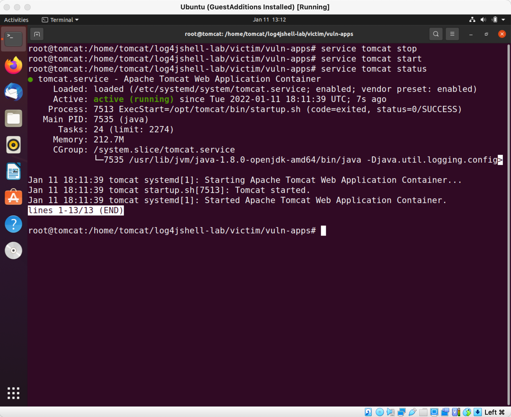
Accessing Vulnerable Java Applications
We need to validate that the vulnerable Java applications that we have installed are working and can be accessed. According to the GitHub repository, there are two ways to access the applications: through a web browser and by using an API-GET request.
a) Web Browser Mode
If your Tomcat server has a graphical user interface (GUI), you can open your preferred web browser and browse to:
- log4j version 2.14.0: 127.0.0.1:8080/Log4j-2.14.0-SNAPSHOT/
- log4j version 2.15.0: 127.0.0.1:8080/Log4j-2.15.0-SNAPSHOT/
- log4j version 2.16.0: 127.0.0.1:8080/Log4j-2.16.0-SNAPSHOT/
If you can only access your Tomcat server by using a terminal application, you can SSH tunnel your access to your vulnerable applications with a different computer.
Let’s use the same Ubuntu desktop virtual machine that we used to set up the vulnerable applications and run the following commands through the terminal application:
ssh -L 8080:127.0.0.1:8080 tomcat@192.168.50.5
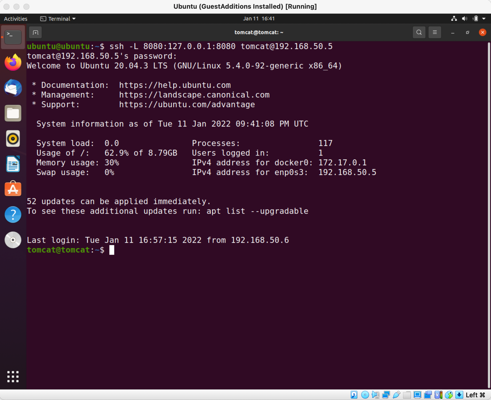
We can now open our preferred browser and browse to any of the previous links such as:
127.0.0.1:8080/Log4j-2.14.0-SNAPSHOT/
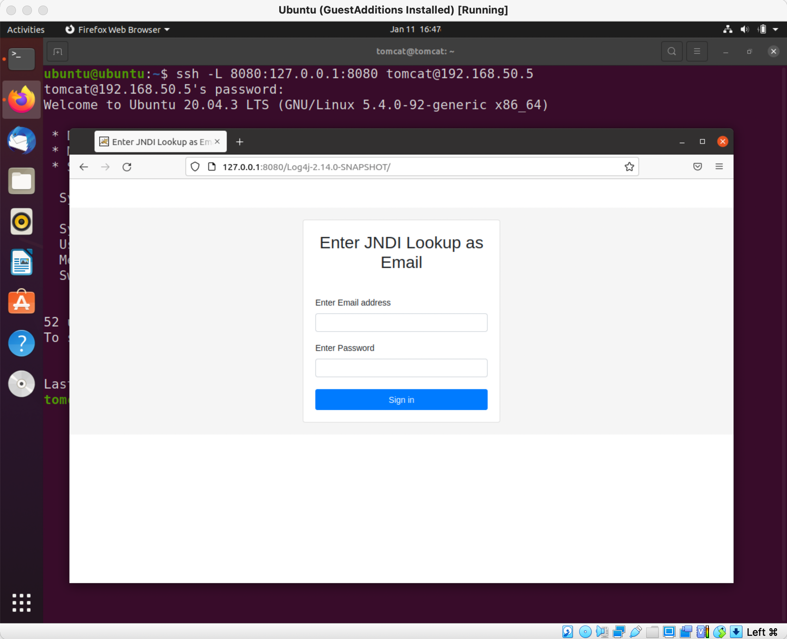
b) API Mode
Another way to access the vulnerable Java applications through their API.
First, using the user (tomcat), IP address (192.168.50.5), and password for our ubuntu server, stablish a SSH connection by running the following commands in the terminal application:
ssh tomcat@192.168.50.5
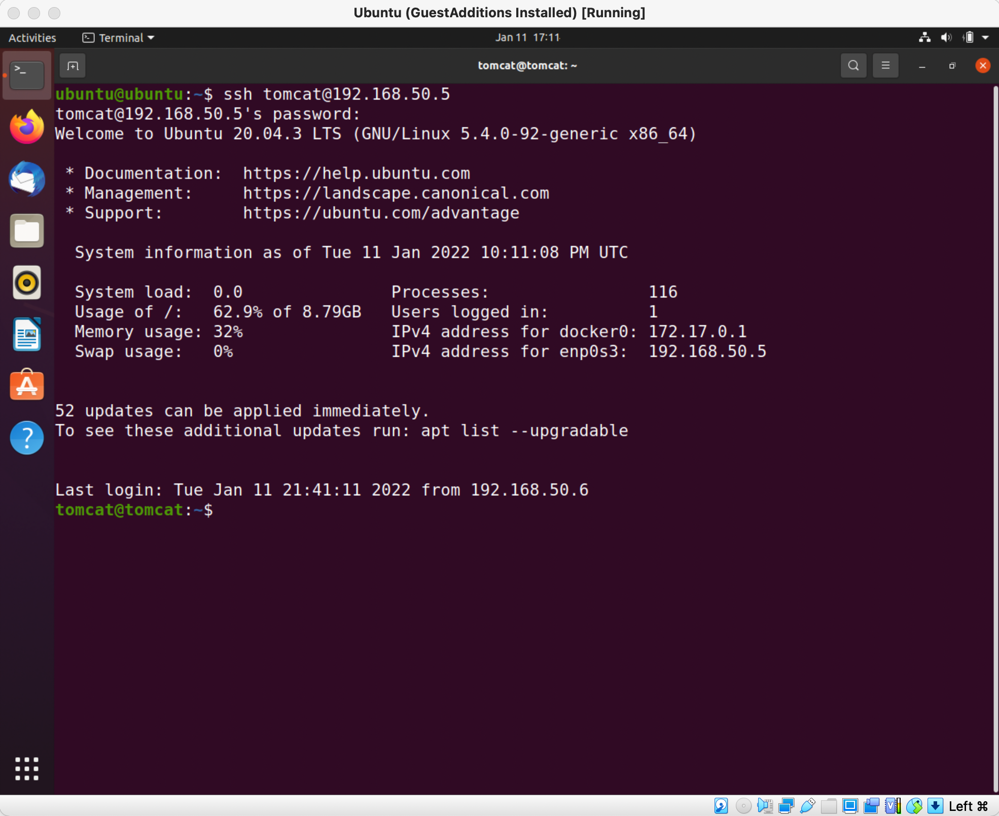
We can now use the curl command to perform a GET request using the API for each application:
- log4j version 2.14.0: curl -X GET 127.0.0.1:8080/Log4j-2.14.0-SNAPSHOT/api
- log4j version 2.15.0: curl -X GET 127.0.0.1:8080/Log4j-2.15.0-SNAPSHOT/api
- log4j version 2.16.0: curl -X GET 127.0.0.1:8080/Log4j-2.16.0-SNAPSHOT/api
Using the SSH connection we established previously, run one of the curl comands such as:
curl -X GET 127.0.0.1:8080/Log4j-2.14.0-SNAPSHOT/api
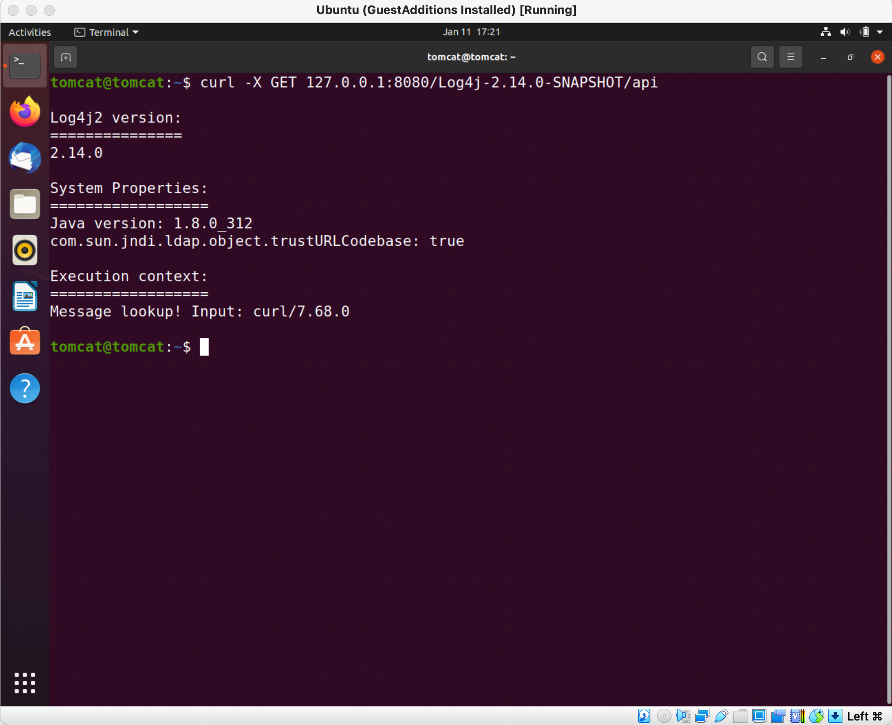
Installing Sysmon for Linux
If you want to generate some endpoint data that you can analyze late when simulating attacks, we can use some resources (bash script and xml config file) from the Blacksmith OTR project. We will use the same SSH connection we established in the previous section.
Using the wget command, download the Install-Sysmon-For-Linux.sh bash script.
Using the chmod command, make the Install-Sysmon-For-Linux.sh bash file an executable file.
Using the sh command, execute the Install-Sysmon-For-Linux.sh bash file. Note that we are adding the config parameter with the url that points to the xml config file.
wget https://raw.githubusercontent.com/OTRF/Blacksmith/master/resources/scripts/bash/Install-Sysmon-For-Linux.sh
chmod +x Install-Sysmon-For-Linux.sh
sh Install-Sysmon-For-Linux.sh --config https://raw.githubusercontent.com/OTRF/Blacksmith/master/resources/configs/sysmon/linux/sysmon.xml
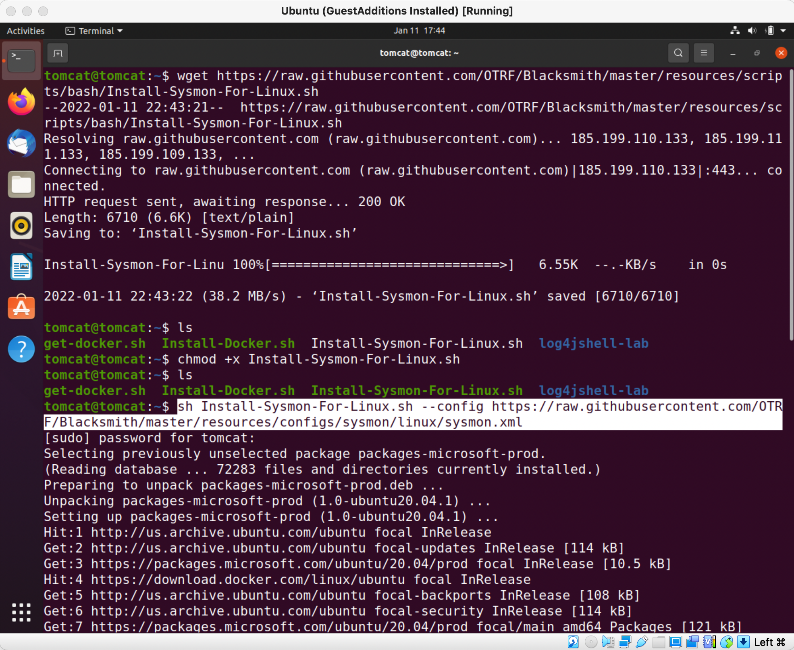
We can validate the generation of Sysmon events by using the following command:
tail -f /var/log/syslog
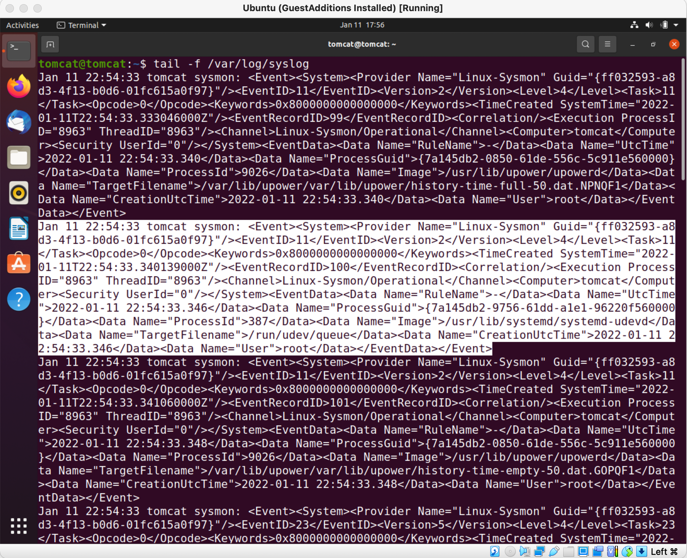
Subscribe to Open Threat Research Blog
Get the latest posts delivered right to your inbox